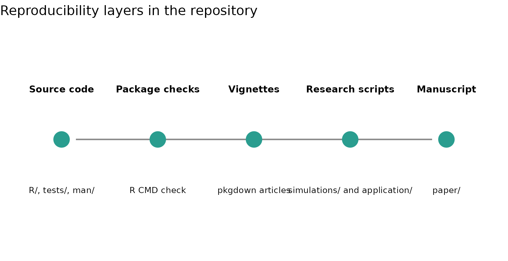

This repository has two reproducibility layers:
- the installable R package
evalueHMM; - the research compendium containing simulations, the elk application and the LaTeX manuscript.
The package layer is intentionally small enough for routine checks. The research layer contains heavier computations and generated outputs used for the manuscript.
Workflow overview
The diagram below summarizes the intended workflow. Package checks should pass without requiring manuscript-scale simulation outputs.
workflow <- data.frame(
x = 1:5,
y = 1,
label = c(
"Source code",
"Package checks",
"Vignettes",
"Research scripts",
"Manuscript"
),
detail = c(
"R/, tests/, man/",
"R CMD check",
"pkgdown articles",
"simulations/ and application/",
"paper/"
)
)
ggplot(workflow, aes(x = x, y = y)) +
geom_segment(
aes(x = 1.15, xend = 4.85, y = 1, yend = 1),
linewidth = 0.6,
colour = "grey55"
) +
geom_point(size = 7, colour = "#2A9D8F") +
geom_text(aes(label = label), nudge_y = 0.16, fontface = "bold", size = 3.3) +
geom_text(aes(label = detail), nudge_y = -0.16, size = 3.0) +
scale_x_continuous(limits = c(0.6, 5.4)) +
scale_y_continuous(limits = c(0.65, 1.35)) +
labs(title = "Reproducibility layers in the repository") +
theme_void()
#> Warning in geom_segment(aes(x = 1.15, xend = 4.85, y = 1, yend = 1), linewidth = 0.6, : All aesthetics have length 1, but the data has 5 rows.
#> ℹ Please consider using `annotate()` or provide this layer with data containing
#> a single row.
Package checks
From the repository root, the package can be checked quickly without rebuilding all vignette outputs:
R CMD build --no-build-vignettes .
R CMD check --no-manual --no-build-vignettes evalueHMM_0.1.0.tar.gzFor a full package check with vignette rebuilding:
The continuous integration workflow runs the package check on Linux, macOS and Windows. The pkgdown workflow builds the online documentation from the same source files.
checks <- data.frame(
layer = c(
"Unit tests",
"Examples",
"Vignettes",
"pkgdown site",
"Research scripts"
),
command = c(
"testthat::test_local()",
"R CMD check",
"R CMD build; R CMD check",
"pkgdown::build_site()",
"Rscript simulations/run_all_simulations.R"
),
routine = c(
"Every package change",
"Every package change",
"Before documentation publication",
"Before GitHub Pages deployment",
"For manuscript regeneration"
)
)
checks
#> layer command
#> 1 Unit tests testthat::test_local()
#> 2 Examples R CMD check
#> 3 Vignettes R CMD build; R CMD check
#> 4 pkgdown site pkgdown::build_site()
#> 5 Research scripts Rscript simulations/run_all_simulations.R
#> routine
#> 1 Every package change
#> 2 Every package change
#> 3 Before documentation publication
#> 4 Before GitHub Pages deployment
#> 5 For manuscript regenerationResearch workflow
The simulation scripts are kept outside the package build because they are manuscript-scale computations.
The manuscript can be compiled from the paper/
directory:
cd paper
pdflatex predictive_e_diagnostics_hmm_improved.tex
pdflatex predictive_e_diagnostics_hmm_improved.tex
pdflatex supplementary_material.tex
pdflatex supplementary_material.texGenerated research outputs are written under:
results/
application/data_processed/
paper/figures/
manuscript_outputs/These outputs are intentionally separated from the source package. That keeps package installation and checking lightweight while preserving the full research workflow in the same repository.
Reproducible environments
The repository includes renv.lock for recreating the
package development environment:
renv::restore()The package tests and vignettes use small seeded examples. The manuscript simulation scripts set their own random seeds and write generated files to the research-output directories listed above.
Practical checklist
Before publishing package or manuscript changes, the intended sequence is:
- run the package tests;
- rebuild the vignettes and pkgdown site;
- run
R CMD check; - regenerate manuscript-scale outputs only when scripts or analysis choices have changed;
- compile the manuscript and supplementary material.
This separation makes the package reproducible as software and the manuscript reproducible as a research compendium.